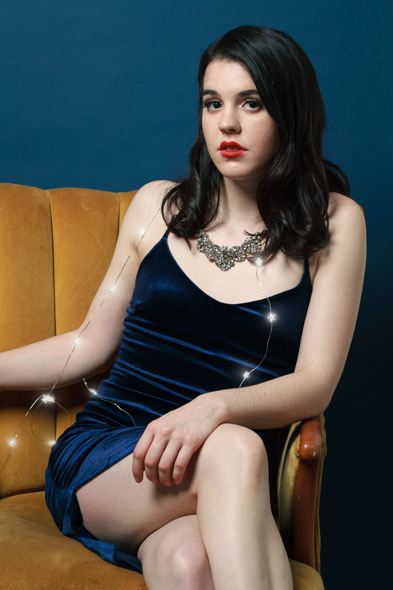
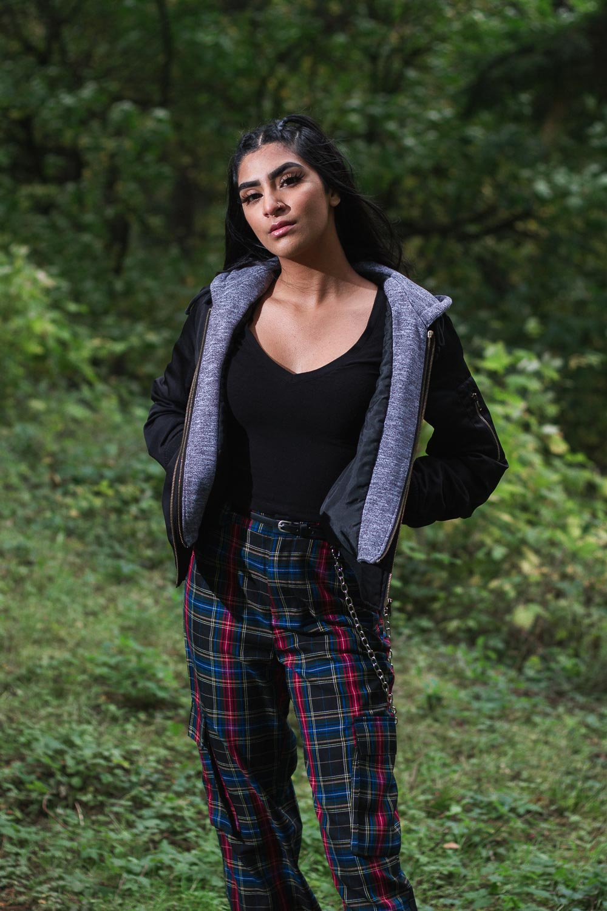
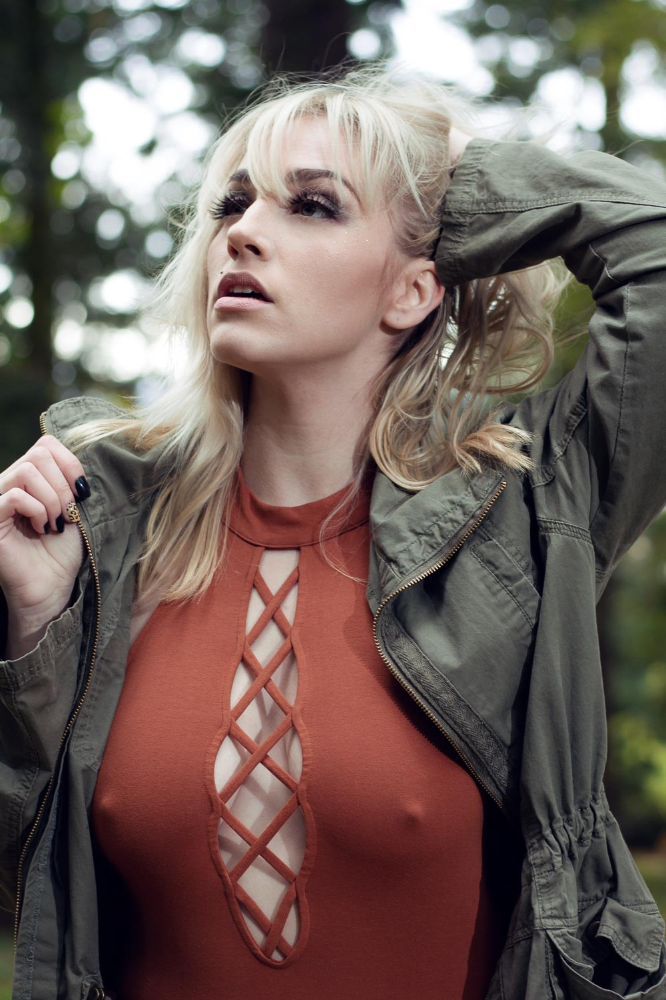
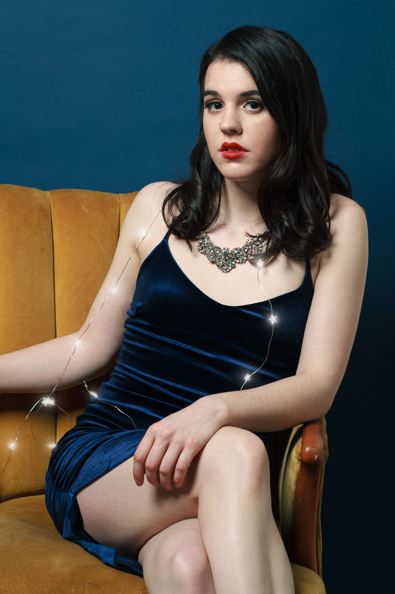
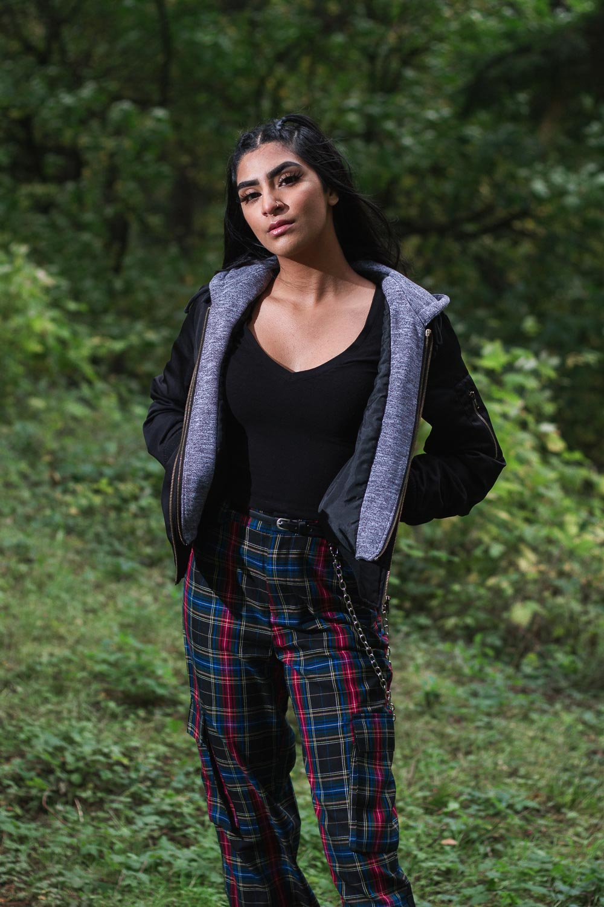
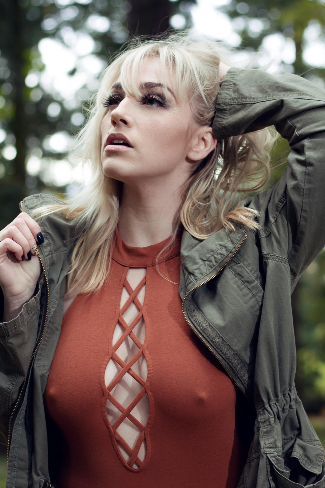

PDX Portraits is a portrait photography meetup group in Portland, Oregon. It helps both models and photographers collaborate in a fun and inclusive environment. PDX portraits has group meetups in Portland throughout the year in both indoor and outdoor locations. This provides a wide variety of shooting posibilities and creative challenges, no matter your style or background.
Please take a look at upcoming events and sign up for one if it looks interesting! Also, take a look at some of our featured models and photographers in our galleries. It might give you a few photo ideas to try out during our upcoming events. Finally, if you've always wanted to try out portrait photography but worry you don't have enough experience, please read the following testamonials:
My name is Amy and I'm a barista in Portland. I've always wanted to try modeling, but have always been too intimidated to try. I finally was convinced by a freind to check out PDX Portraits and was amazed at the vibe. Everyone was so nice and not competitive at all! I paired up with a few photographers at the event and had a blast. I still feel like a complete newbie when it comes to modeling, but I now know there's a group I can work on my craft and develop a small modeling portfolio.
I'm Antonio, I'm a photographer and I move recently from Italy to Portland. I am looking for a good fit of photographer and models. It's hard to find good people! This group was great! I have lots of fun at each event and have created other projects with people I meet at the group.
Events
Mt. Tabor Park
09/05/2020
Studio Northwest
12/15/2020
Featured Models

 




